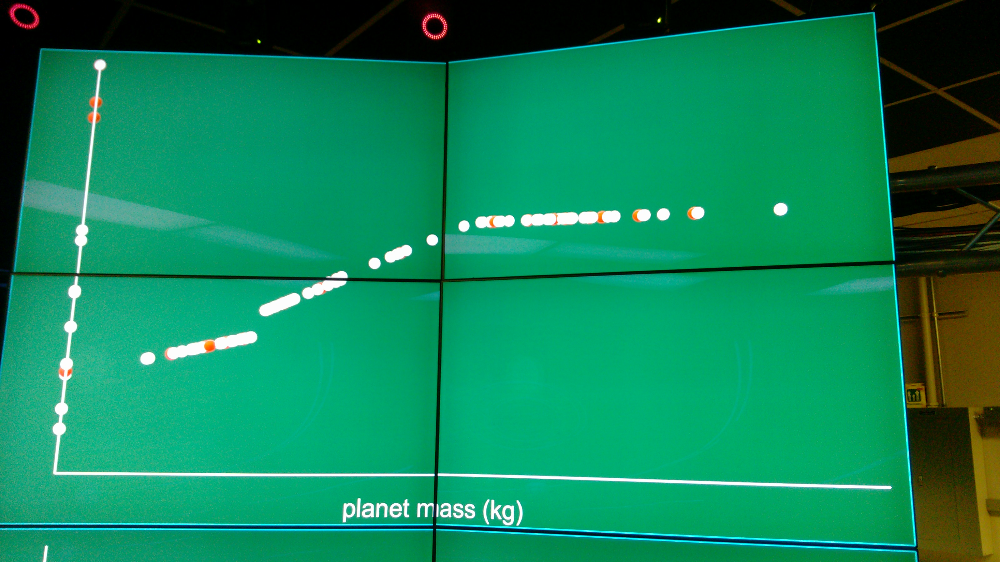
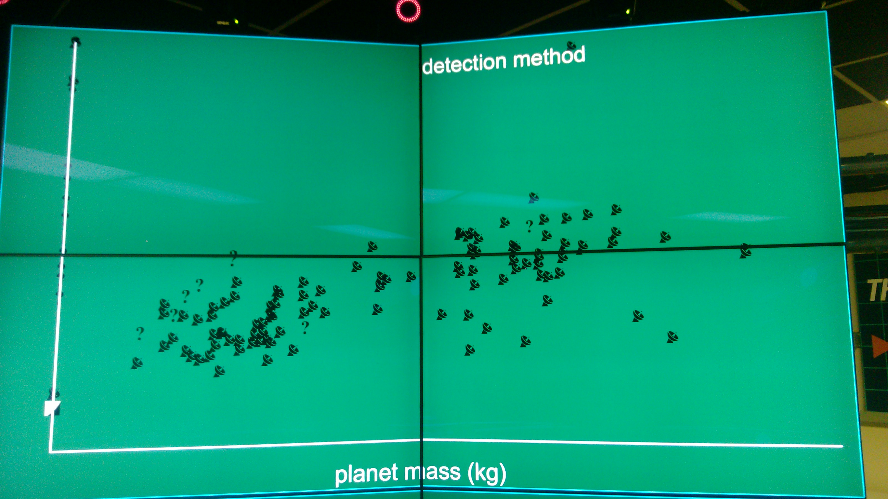
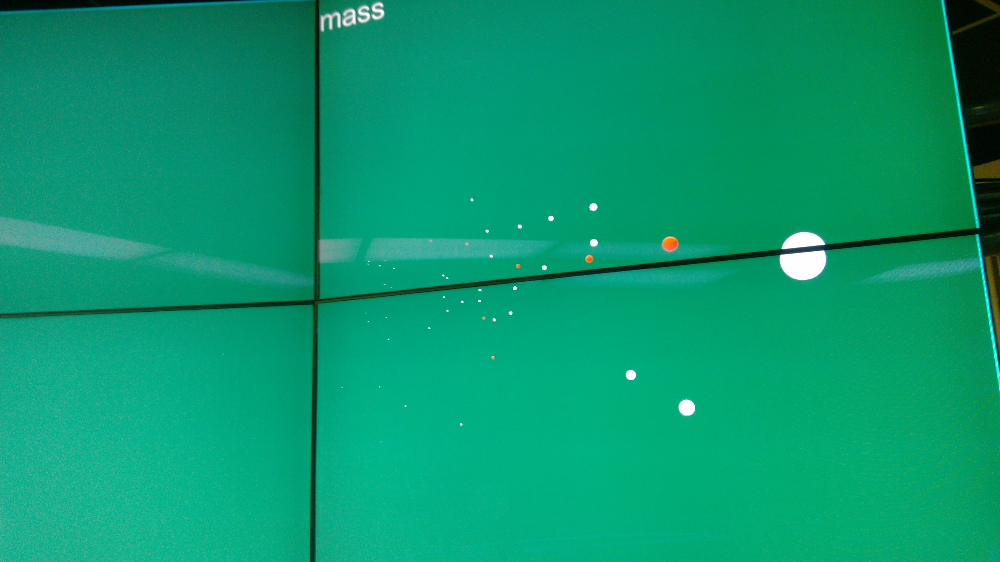
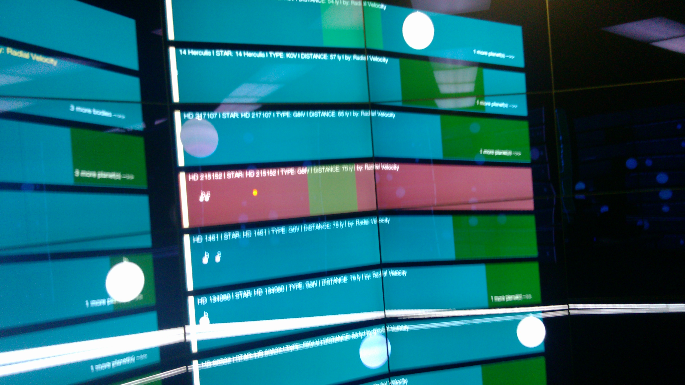
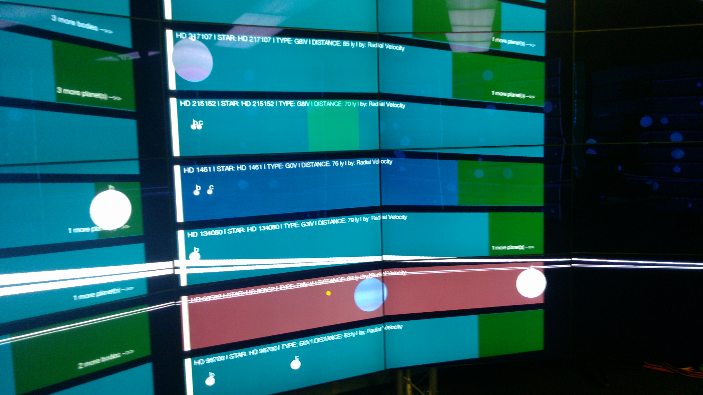
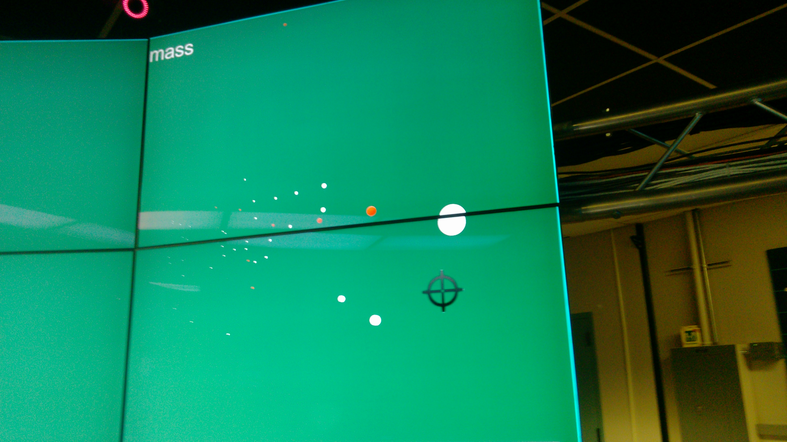
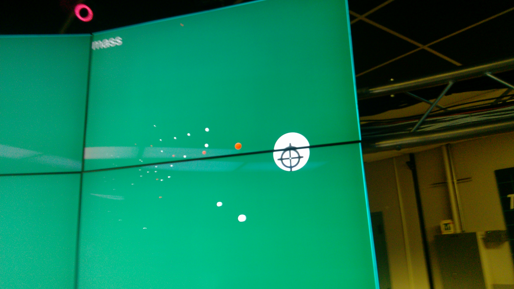

The Introduction
This project is an enhancement of our project 2. The purpose is to practice on picking up a previous project and add features to it.
The work is to add a 2D graph to exisiting small multiples display wall, showing planets data as a scatter plot.
Overview
The Demo
The Installation
- have omegalib installed. You can get it here
- if you are running it on higher than Mac OS X 10.8, you also need to have XQuartz
- download the source code from Github or on top of this page
- to run the project, first run XQuartz, then do as following with Terminal:
$ >cd [omegalib_build]/bin/
$ >./orun -s [where_you_put_the_project]/main.py
Note that to have the best experience, you need to run it in CAVE2. You can buy one here
The Work
Below I describe the work I did in this enhancement:
First, I removed a subset of the small multiples in project 2. I decided to place the graph in a side of the CAVE instead of seperating remaining small multiples in left and right sides of 3D space even more far away from each other. The graph I added plots all planets that are currently being showed in small multiples as a scatter plot. As our solar system will always be included in the small multiples, planets in our solar system will always be ploted onto the graph. When small multiples changes (when using filters or loading different predefined sets or loading from saved session), the dots or glyphs in the graph will be updated accordingly.
There are multiple variables that we can choose for X-axis as well as Y-axis. Those variables include planet mass, planet radius, orbital radius, orbital period, and distance to our solar system. Besides, we can also configure the dots themselves. We can use sizes of the dots in the graph to show the relative mass or radius of the planets. We can also change the dots into glyphs that show the detection method of a planet. Normally, dots are in white color, but those who are highlighted in the small multiples are red dots.
glyphs showing detection methods
dots showing mass
The new graph were added into the old project in an integrated way that it not only doesn't diminish functionality of old part of the project but also works with old part together as a whole. What's more, some part of the old project were also enhanced. For example, outlining box of a small multiple now will have a different color when being pointed at or is selected during re-ordering.
System that being pointed at will be highlighted
Blue is the system that is ready to be re-ordered, Red is the one currently being pointed at
By pointing the wand to the graph, we can integrate with it. During this period, the interaction ability of the wand has been limited to the graph, so it will not mistakenly activate other event in our old project. A crosshair will be moving around the graph as we pointing the wand at the graph and move it. Whichever dot/glyph that is being pointed at will be enlarged so we get a general idea of what we are doing.
 First image shows the crosshair, Second image shows dots enlarged
By pressing Button2 (i.e. the circle button), the information about the system to which the planet that we are pointing at belong will pop up. The information is the same as we have for the system in the center in the original project. Pointing the wand to the information and press Button2 again will close it.
Another operation available to the users is pressing Button3 when pointing at a planet in the graph. This action calls the function that bring a system into our 'central 3D showcase', using this planet's hosting system as the parameter. This function is also integrated with the enhancement of old project mentioned above. The system that are brought to the center will be highlighted in the small multiples.
This is another good example of how this new comer get along with old fellas in the wall.
The Data
I would like to talk a little more about the data.
Due to the nature of the universe, I chose to use logarithmic scale for ALL five variables for X-axis and Y-axis. And the origin point of the axes is not zero, but some value that are a little bit smaller than the smallest value in the graph. Similarly, the scale is also based on maximum and minimum values in the graph, and thus the extreme value that the graph can contain is also dynamic. The reason behind this decision is that in this way we can plot the dots generally over all the space we have in the graph, which then makes the graph looks much better than 'huge empty space + massive dots in a corner'.
As for the point representation, I used logarithmic scale for radius and linear scale for mass.
To play with logarithmic scale, the most important thing is to make all the values are larger than 1. Because otherwise we will have negative values or some errors from python (when we have 0). So I converted everything to very small units (thus very huge numbers).
- For mass,
Kilogramis used. - For planet radius and orbital radius,
Kilometeris used. - For orbital period,
Houris used. - For distance to our solar system,
Lightyearis used, because no value is small than 1 (except 0 for our solar system, which has been handled specially)
The Extra
I have a second graph added, this way it is much more convenient for people to compare different X/Y axis assignment of differnt variables.